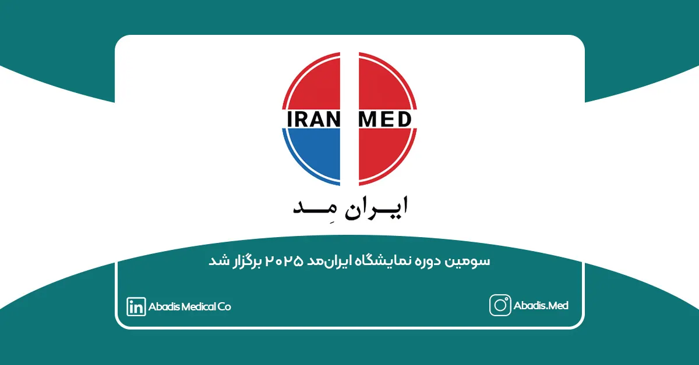

گامی نو در دیجیتالیسازی، نوآوری صنعتی و مسئولیت اجتماعی
سومین دورهی نمایشگاه ایرانمِد ۲۰۲۵ از ۱۷ تا ۲۰ مهرماه ۱۴۰۴، با حضور بیش از ۲۵۰ شرکت داخلی و خارجی در تهران برگزار شد.
طبق اعلام برگزارکنندگان، این دوره با ۱۴ هزار بازدیدکننده همراه بوده و نسبت به سال گذشته، تغییرات چشمگیری را تجربه کرده است.
به گفتهی تحلیلگران، یافتههای تحقیقاتی شرکتهای آبادیس و ویراکام در زمینهی تحلیل دادههای مقایسهای نمایشگاهی که سال گذشته منتشر شد نقشی مؤثر در افزایش مشارکت، بهبود تعاملات و رشد کیفی رویداد امسال داشته است.
دیجیتالیشدن کامل ارتباطات نمایشگاهی
در ایرانمِد ۲۰۲۵، گامی نو در جهت دیجیتالیسازی و هوشمندسازی ارتباطات نمایشگاهی برداشته شد؛ امسال، برای نخستینبار، قابلیت QR Code اختصاصی بر روی کارتهای غرفهداران و بازدیدکنندگان فعال بود.
با اسکن کد QR درجشده روی کارت هر غرفه، بازدیدکنندگان میتوانستند اطلاعات کامل شرکت، محصولات و مسیرهای ارتباطی را بهصورت آنلاین مشاهده کنند.
این اقدام، علاوه بر حذف کاتالوگهای چاپی، گامی مؤثر در جهت توسعهی ارتباطات دیجیتال و پایش دادههای بازدیدکنندگان بود.
کاشت ۳۰۰ اصله نهال بلوط در زاگرس
نمایشگاه ایرانمِد ۲۰۲۵ با نگاهی ویژه به مسئولیت اجتماعی و حفظ محیطزیست همراه بود.
به ازای حضور هر شرکت در نمایشگاه، یک اصله نهال بلوط در زاگرس کاشته شد تا در مجموع، ۳۰۰ اصله نهال در این منطقه سبز شود.
در بیانیهی برگزارکنندگان آمده است:
«امیدواریم در آینده و با گسترش نمایشگاه، ابعاد این کمپین توسعه یافته و نقش پررنگتری در حفظ و ارتقای محیطزیست میهن عزیزمان ایفا کنیم.»
برای مشاهده خبر در سایت ایرانمِد روی این لینک کلیک نمایید.
جایزه ملی ایرانمِد
در حاشیهی نمایشگاه، جایزه ملی ایرانمِد برای نخستینبار با هدف شناسایی و تقدیر از محصولات برتر داخلی، خدمات فنی و مهندسی، و طرحهای دانشجویی نوآورانه برگزار شد.
این جایزه در سه بخش اصلی طراحی شده است:
-
محصولات تولیدی
– جایزه کیفیت و قابلیت اطمینان
– نوآوری و فناوری
– تأثیر اقتصادی و بازار -
خدمات فنی و مهندسی
– جایزه خدمات پس از فروش
– نوآوری در خدمات
– تأثیر صنعتی -
طرحهای دانشجویی
– جایزه نوآوری
– قابلیت تجاریسازی
– تأثیر اجتماعی و علمی
متولی این ایدهی ارزشمند، دکتر اسحاق عامری، از چهرههای برجستهی صنعت مهندسی پزشکی کشور بودهاند.
ایستگاه کار؛ پلی میان دانشگاه و صنعت
ایستگاه کار ایرانمِد برای دومینبار با هدف ایجاد ارتباط مؤثر میان جویندگان کار و شرکتهای فعال صنعت تجهیزات پزشکی برگزار شد؛ در این بخش، کارجویان پس از ثبتنام و انجام مصاحبهی اولیه، با حضور در میزگردها و تورهای بازدید تخصصی، با فرصتهای شغلی این صنعت آشنا شدند و شرکتها نیز توانستند استعدادهای جدید را شناسایی و جذب کنند.
کارگاهها، سمینارها و حامیان نمایشگاه
در کنار نمایشگاه اصلی، مجموعهای از کارگاههای آموزشی تخصصی و سمینارهای علمی با حضور اساتید دانشگاه، مدیران صنعتی و کارشناسان حوزه سلامت برگزار شد، موضوعات این کارگاهها شامل نوآوری در تجهیزات پزشکی، استانداردهای صادراتی و توسعهی بازارهای منطقهای بود.
لیست ورکشاپ و آموزشهای تخصصی ایرانمِد ۲۰۲۵:
1) ورکشاپ آشنایی و آموزش تجهیزات کلیدی جراحیهای مغز و اعصاب و ENT
شرکت: تهران جراح نوین
زمان: جمعه ۱۸ مهر ۱۴۰۴ از ساعت ۱۵ الی ۱۷
مکان: نمایشگاه بینالمللی شهر آفتاب، ساختمان اداری
مدرسین: دکتر مجید راز؛ مهندس فرزاد فرازدست
2) ورکشاپ سسیستمهای جراحی کمتهاجمی
شرکت: تهران جراح نوین
زمان: جمعه ۱۸ مهر ۱۴۰۴ از ساعت ۱۱ الی ۱۳
مکان: تهران، نمایشگاه بینالمللی شهر آفتاب، ساختمان اداری
مدرسین: مهندس نیما شهبازنژاد3) آموزش عملکرد سیستمهای اندوسکوپی (لاپاراسکوپی)
شرکت: صنعت تجهیزات پزشکی صاایران
زمان: جمعه ۱۸ مهر ۱۴۰۴ از ساعت ۱۱:۰۰ الی ۱۳:۰۰
مکان: تهران نمایشگاه بینالمللی شهر آفتاب، ساختمان اداری
مدرسین: مهندس پیام نژادپور
4) آموزش نحوه عملکرد و نگهداشت دستگاههای مانیتور علایم حیاتی، ساکشن جراحی و الکتروشوک قلبی
شرکت: صنعت تجهیزات پزشکی صاایران
زمان: شنبه ۱۹ مهر ۱۴۰۴ از ساعت ۱۱:۰۰ الی ۱۳:۰۰
مکان: تهران نمایشگاه بینالمللی شهر آفتاب، ساختمان اداری
مدرسین: مهندس سینا عباسی
5) کاربری و نگهداری تجهیزات اسکوپی فلکسیبل (کمپانی الیمپوس)
شرکت: فنآوری آزمایشگاهی
زمان: شنبه ۱۹ مهر ۱۴۰۴ از ساعت ۱۰:۰۰ الی ۱۴:۰۰
مکان: تهران نمایشگاه بینالمللی شهر آفتاب، ساختمان اداری
مدرسین: مهندس سعیدی؛ مهندس نوحی؛ مهندس زنگنه؛ مهندس محمد شهیدی؛ مهندس مهربانی؛ مهندس اکبری؛ مهندس محقق؛ مهندس پروره؛ مهندس عراقی
6) مدیریت راه هوایی و سیستمهای احیا
شرکت: جهان گسترش تجارت
زمان: شنبه ۱۹ مهر ۱۴۰۴ از ساعت ۱۵ الی ۱۷
مکان: تهران، نمایشگاه بینالمللی شهر آفتاب، ساختمان اداری
مدرسین: خانم مهندس کیمیا مهرصفت؛ خانم مهندس ریحانه سیفیپور
7) دستگاه ونتیلاتور پرتابل
شرکت: جهان گسترش تجارت
زمان: پنجشنبه ۱۷ مهرماه از ساعت ۱۵ الی ۱۷
مکان: تهران، نمایشگاه بینالمللی شهر آفتاب، ساختمان اداریمدرسین: مهندس امیررضا آزاد
8) هیستروسکوپی
شرکت: جهان گسترش تجارت
زمان: جمعه ۱۸ مهرماه از ساعت ۱۵ الی ۱۷
مکان: تهران، نمایشگاههای دائمی شهر آفتاب، ساختمان اداریمدرسین: خانم دکتر شهلا نوری اردبیلی؛ خانم مهندس فاطمه آشتیانی
9) توزیع و عرضه دیجیتال در صنعت تجهیزات پزشکی
شرکت: آوان درمان ارگ
زمان: جمعه ۱۸ مهر ۱۴۰۴ ساعت ۱۱ الی ۱۳
مکان: تهران نمایشگاه بینالمللی شهر آفتاب، ساختمان اداریمدرسین: دکتر اسحاق عامری؛ دکتر علیرضا شیخ؛ مهندس رضا شهبازی؛ مهندس مهدی افخمی؛ مهندس شایان شکری
10) دستیار هوشمند صوتی پزشک و جراح و مستندسازی هوشمند پزشکی
شرکت: فناوریهای آینده مبین (مبینیفا)
زمان: جمعه ۱۸ مهر ۱۴۰۴ | ساعت ۱۵:۰۰ تا ۱۷:۰۰
مکان: تهران، نمایشگاه بینالمللی شهر آفتاب، ساختمان اداریمدرسین: دکتر محمود شکرالهیفر (دکترای علوم شناختی و هوش مصنوعی از هلند)
11) بررسی چالشهای منابع انسانی نسل Z
شرکت: آوان درمان ارگ
زمان: شنبه ۱۹ مهر ۱۴۰۴ از ساعت ۱۵:۰۰ الی ۱۷:۰۰
مکان: تهران نمایشگاه بینالمللی شهر آفتاب، ساختمان اداریمدرسین: دکتر سعید شهبازمرادی؛ دکتر اسحاق عامریان؛ دکتر داریوش سنقری؛ مهندس مریم نعیمی
12) استپلرهای جراحی؛ تکنولوژی تولید تا درمان بیماری
شرکت: فراطب جراح
زمان: شنبه ۱۹ مهر ۱۴۰۴ از ساعت ۱۱ الی ۱۳
مکان: تهران، نمایشگاه بینالمللی شهر آفتاب، ساختمان اداریمدرسین: مهندس میثم محمد؛ مهندس امیررضا رضاپور
13) الزامات ISO 13485 و آشنایی با مجوز CE
شرکت: کیفیت کوشان پارس
زمان: پنجشنبه ۱۷ مهر ۱۴۰۴ | ساعت ۱۱:۰۰ تا ۱۳:۰۰
مکان: تهران، نمایشگاه بینالمللی شهر آفتاب، ساختمان اداریمدرسین: مهندس امید هادی
14) قوانین و مقررات صادرات و واردات کالا
شرکت: کیفیت کوشان پارس
زمان: شنبه ۱۹ مهر ۱۴۰۴ | ساعت ۱۵:۰۰ تا ۱۷:۰۰
مکان: تهران، نمایشگاه بینالمللی شهر آفتاب، ساختمان اداریمدرسین: مهندس امید هادی
ربات تلگرامی ایرانمِد ۲۰۲۵؛ تجربهای نو از تعامل دیجیتال
ربات تلگرامی نمایشگاه بینالمللی تجهیزات پزشکی ایرانمِد ۲۰۲۵ که توسط تمپا رسانه راهبردی طراحی و راهاندازی شده است، تنها در ۴۸ ساعت نخست فعالیت خود بیش از ۱۰٬۰۰۰ کاربر فعال را جذب کرد.
این ربات با آدرس iranmed_bot@ به کاربران این امکان را میدهد تا با ارسال تصویر شخصی خود، پوستر رسمی نمایشگاه را با عکس اختصاصیشان دریافت کنند.
به گزارش دبیرخانه ایرانمِد، طی دو روز نخست، هزاران نسخه از این پوسترها در شبکههای اجتماعی منتشر شده و مجموع بازدید آنها به بیش از ۱۰۰٬۰۰۰ نفر رسیده است.
این پروژه بخشی از کمپین دیجیتال تمپا رسانه راهبردی تجهیزات پزشکی است که با هدف افزایش تعامل مخاطبان و تقویت حضور هوشمند در رویدادهای تخصصی اجرا شد و به گفته کارشناسان، بهعنوان یکی از موفقترین نمونههای بازاریابی دیجیتال در نمایشگاههای صنعتی کشور شناخته میشود.
نگاهی تحلیلی
بر اساس دادههای تحلیلی منتشرشده از سوی شرکتهای آبادیس و ویراکام، نمایشگاه امسال با رشد چشمگیر در شاخصهای تعامل بازدیدکننده با غرفه، کیفیت ارتباطات پس از نمایشگاه و رضایت مشارکتکنندگان همراه بوده است.
افزایش ۳۲ درصدی استفاده از ابزارهای دیجیتال نسبت به سال گذشته، حذف کامل کاتالوگهای چاپی، و رشد ۲۵ درصدی تعاملات B2B از جمله نتایج این تحول دیجیتال عنوان شده است.
سومین دوره نمایشگاه ایرانمِد ۲۰۲۵ بار دیگر ثابت کرد که ترکیب نوآوری، مسئولیت اجتماعی و تحلیل دادهمحور میتواند الگویی نوین برای برگزاری نمایشگاههای تخصصی در ایران رقم بزند.